Educacional Sistema Novo
Curso de: Microsoft Access, Excel, Power Point, Word, internet e windows no Sistema Novo de Ensino Profissional com duração de 96h.
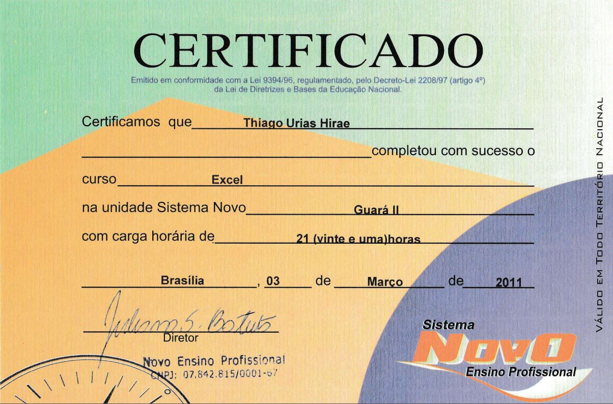Educacional Microlins
Curso de montagem e matutenção de microcomputadores e redes abordando os módulos: Hardware-introdução, Hardware-sistemas operacionais, Redes-introdução, Redes-Estruturação e redes com carga horária de 96h.
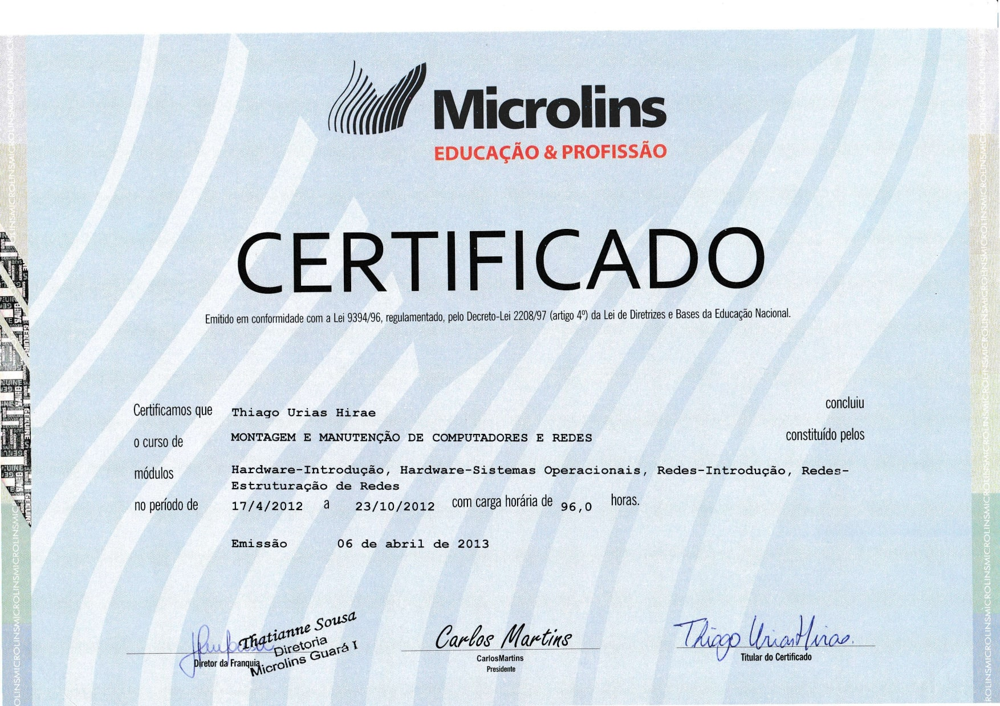Educacional Projeção
Graduação do Ensino Médio realizado no Colégio Projeção, situado em Brasília/DF.
ProfissionalTéc. de Informática
Comecei a prestar serviços de montagem, limpeza, configuração e formatação de computadores e notebooks. Serviço que presto esporadicamente até hoje.
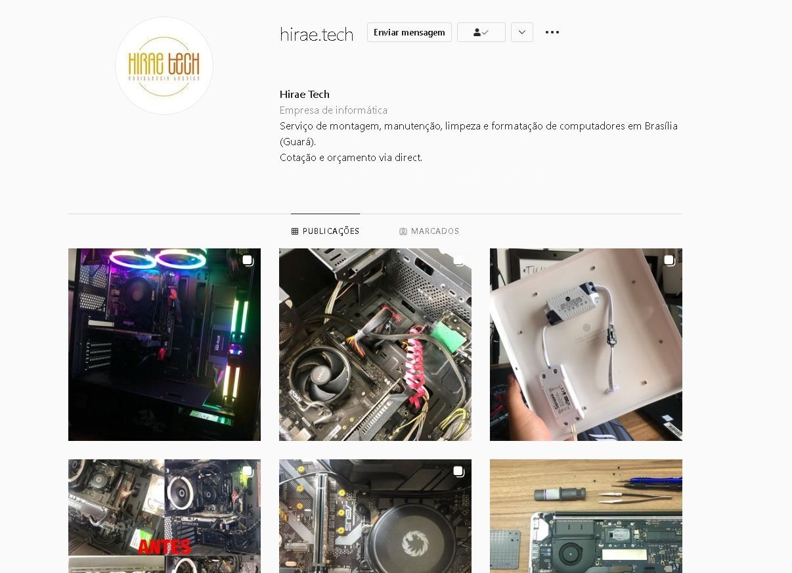Educacional UnB
Início do curso de ensino superior de Computação (Licenciatura) na UnB (Universidade de Brasília).
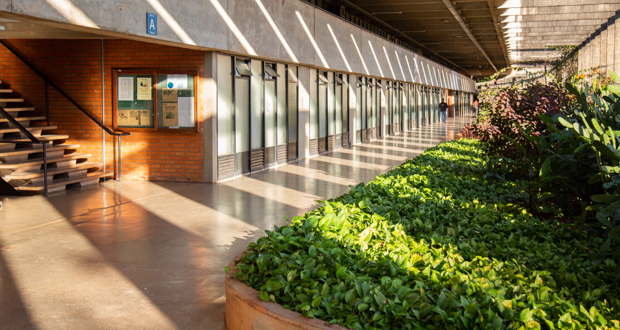Profissional - ConcursoCAIXA
Aprovado no concurso de 2014, realizado pelo CESPE, para a CAIXA Econômica Federal para atuação na área de TI. Concurso na qual demoraram-se 7 anos para a convocação.
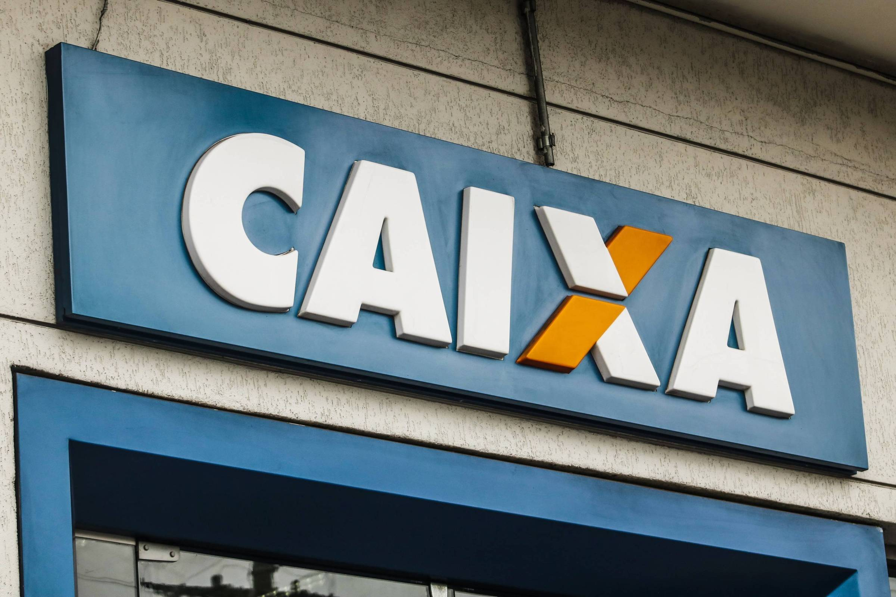EducacionalCOOPLEM
Conclusão do curso Avançado de Inglês (C.E.F.C1) com carga horária de 867 horas-aula.
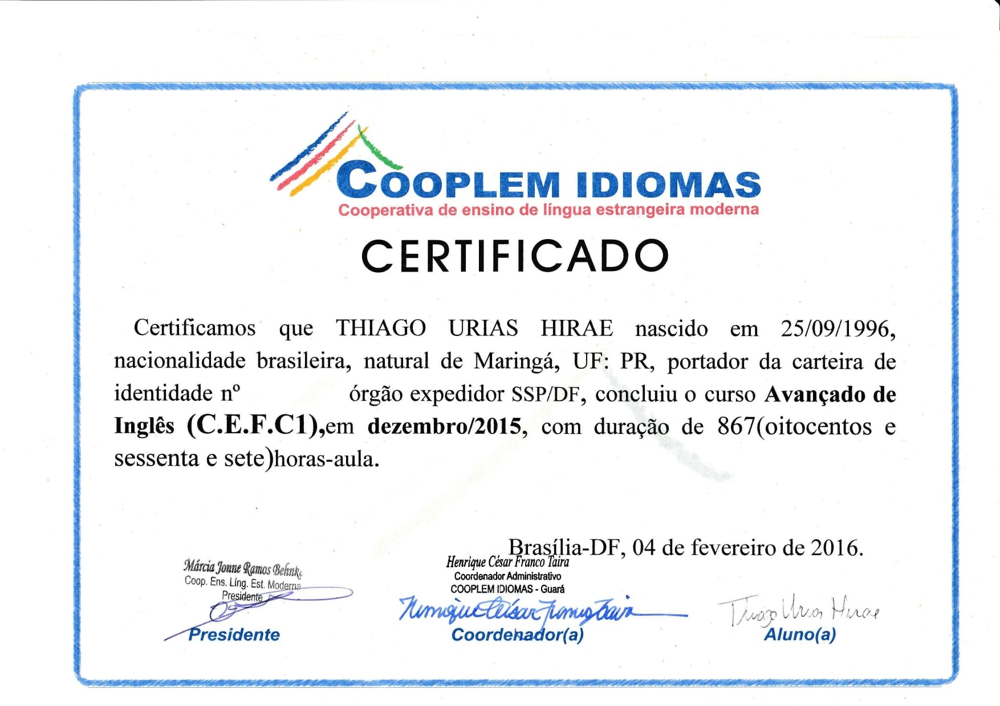ProfissionalBASIS
Estagiário de desenvolvimento web na Basis Tecnologia da Informação, na qual tive experiências com: Outsystems, JavaScript, CSS, HTML, Protractor e AngularJS, documentação, análise de requisitos e criação de protótipo.
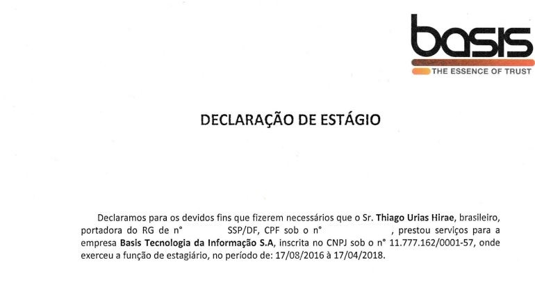ProfissionalESMPU
Após seleção pública, me tornei estagiário na ESMPU (Escola Superior no Ministério Publico da União) responsável por prestar suporte aos servidores públicos nas questões envolvendo tecnologia.
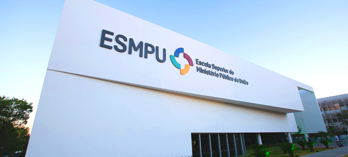ProfissionalSenado
Após seleção pública, me tornei estagiário no Senado Federal e atuava como desenvolvedor Front-end. Era responsável por criação de produtos tanto para o público externo quanto para o interno.
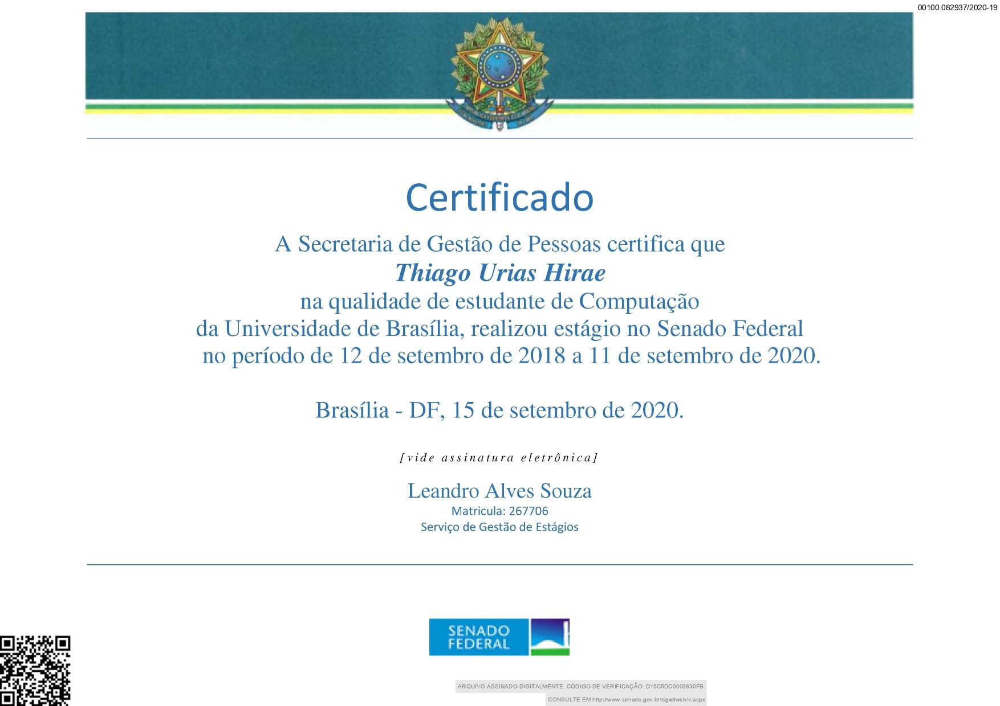ProfissionalEscola 411 Norte
Como estudante da Universidade de Brasilia, lecionei aulas de computação para crianças de 9 à 10 anos. O foco foi abordar tópicos básicos de computação, como: introdução ao pensamento computacional, correto uso do mouse e teclado, como conectar e desconectar corretamente os cabos do computador, aprender como realizar pesquisas em sites de busca, editar documentos e textos, criar apresentação de slides, maximizar as habilidades de digitação, aumentar a habilidade lógica e uso de tablets. Todo o material que foi criado por mim, e meu parceiro Artur, é público e pode ser utilizado para dar suporte a professores que desejam dar aulas de computação às crianças.
EducacionalProjeto de Exensão
Participei do projeto de exensão UnB+Escola, com carga horária de 40h.
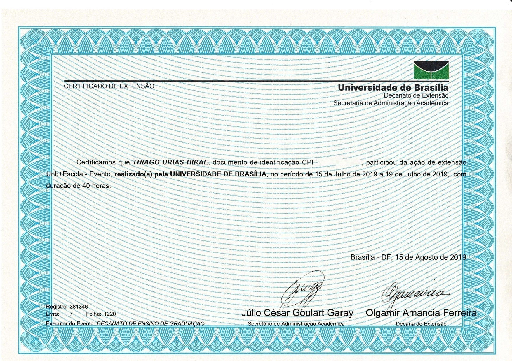ProfissionalBanco Central
Atuava como Analista de Suporte do DEINF (Departamento de Informática) no Banco Central do Brasil, mais especificadamente no time do software Micro Focus Service Manager
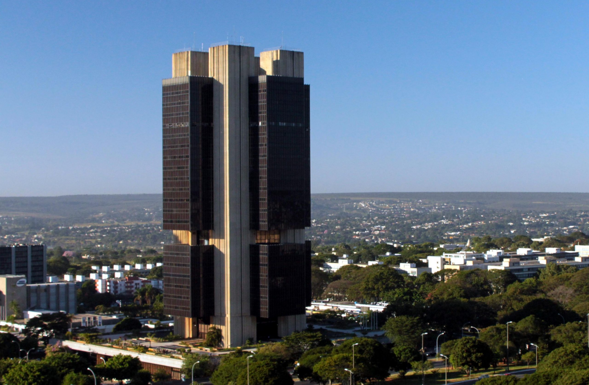EducacionalUnB - Conclusão
Conclusão do curso de ensino superior de Computação na Universidade de Brasília. TCC aprovado com SS (Nota 10) sobre o tema: Letramento digital do idoso segundo abordagem biopsicossocial.
ProfissionalCAIXA - Concurso
Ingresso ao serviço público. Atuando como desenvolvedor front-end na comunidade de programas sociais.

EducacionalUnyleya
Início do MBA(Master of Business Administration) na faculdade Unyleya, com foco em Design Thinking.
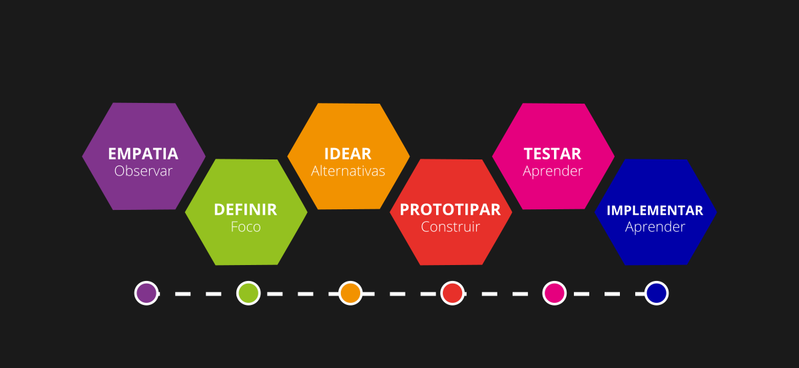